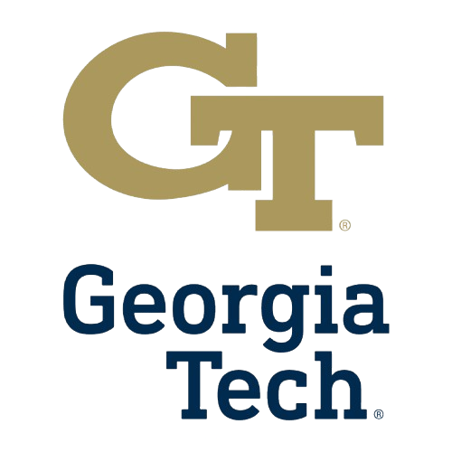

Georgia Tech Tutoring and Learning Enrichment
Incoming Learning Assistant
March 2026 - Present
Incoming Learning Assistant supporting STEM instruction through office hours and small-group learning.
- Facilitate problem-solving and conceptual understanding in STEM courses through office hours and small-group instruction.
- Support course coordination and communication between students and instructional staff.